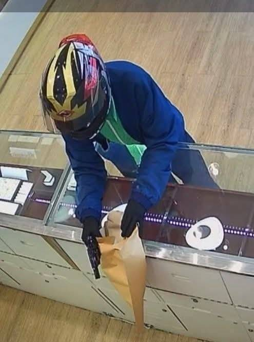

ร้านทองขวัญผวา คนร้ายปกปิดใบหน้า ควงปืนบุกปล้นทองหนัก 13 บาท ข่มขู่พนักงานแล้วรีบหลบหนี
เมื่อวันที่ 14 มีนาคม 2568 เวลาประมาณ เก้านาฬิกา สามสิบนาที สถานีตำรวจภูธรคูคต จังหวัดปทุมธานี ได้รับแจ้งจากศูนย์วิทยุสถานีตำรวจภูธรคูคต เกิดเหตุร้านทองออโรร่า หมู่ 4 ตำบลลาดสวาย อำเภอลำลูกกา จังหวัดปทุมธานี ถูกชิงทรัพย์เป็นทองรูปพรรณหนักรวมสิบสามบาท รวมมูลค่าห้าแสนสี่หมื่นเจ็ดพันหกร้อยห้าสิบบาท
หลังพลตำรวจตรีสุระ เลิศไธสง ได้ตรวจสอบหลักฐานและสถานที่เกิดเหตุ พบชายไม่ทราบชื่อแต่งกายปกปิดใบหน้า ใช้รถจักรยานยนต์ฮอนด้าจีออโน่สีขาว ไม่ติดแผ่นป้ายทะเบียน พร้อมอาวุธปืนแบบกึ่งอัตโนมัติสีดำที่ใช้ในการก่อเหตุชิงทรัพย์ครั้งนี้
จากภาพกล้องวงจรปิด คนร้ายได้ถือซองกระดาษสีน้ำตาลเดินเข้าไปในร้าน พร้อมชักปืนข่มขู่ให้พนักงานหญิงทั้งสองส่งมอบทองให้ ขณะเดียวกัน คนร้ายยังพยายามรื้อเคาน์เตอร์หน้าร้านเพื่อค้นหาของมีค่า หลังได้ทองรูปพรรณน้ำหนักรวม 13 บาท ซึ่งเป็นทองที่ลูกค้านำมาจำนำไว้กับทางร้าน คนร้ายได้ยัดซองกระดาษใส่ไว้ในช่องเก็บของใต้รถจักยานยนต์ ก่อนหลบหนีไป
เมื่อวันที่ 16 มีนาคม 2568 เจ้าหน้าที่ชุดสืบสวนสอบสวน สถานีตำรวจภูธรคูคต จังหวัดปทุมธานี เข้าจับกุมผู้ต้องหาชิงทอง ที่บ้านพักของผู้ต้องหา ในย่านคลองสี่ ถนนไสวประชาราษฎร์ ตำบลลาดสวาย อำเภอลำลูกกา จังหวัดปทุมธานี ได้แล้วตอนนี้ - ข่าวเวิร์คพอยท์รายงาน